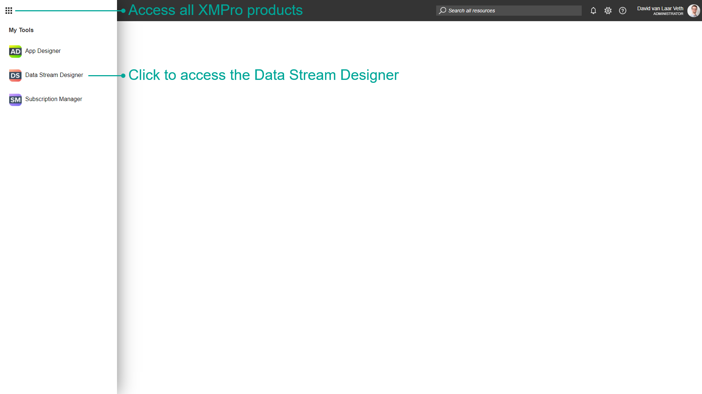
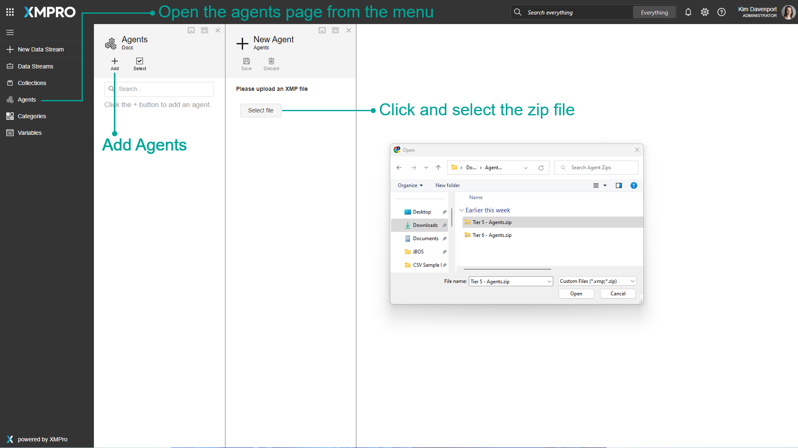
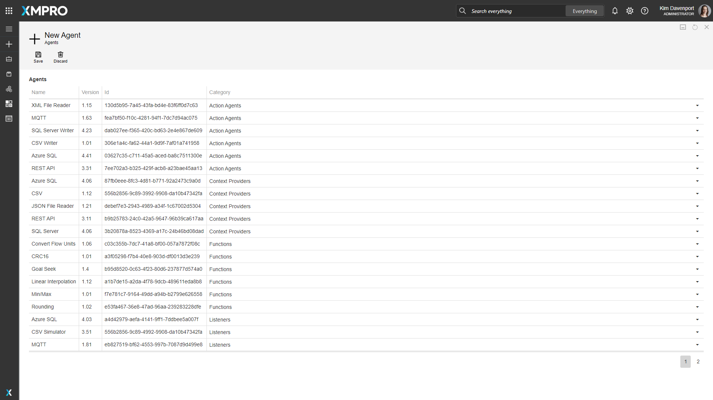
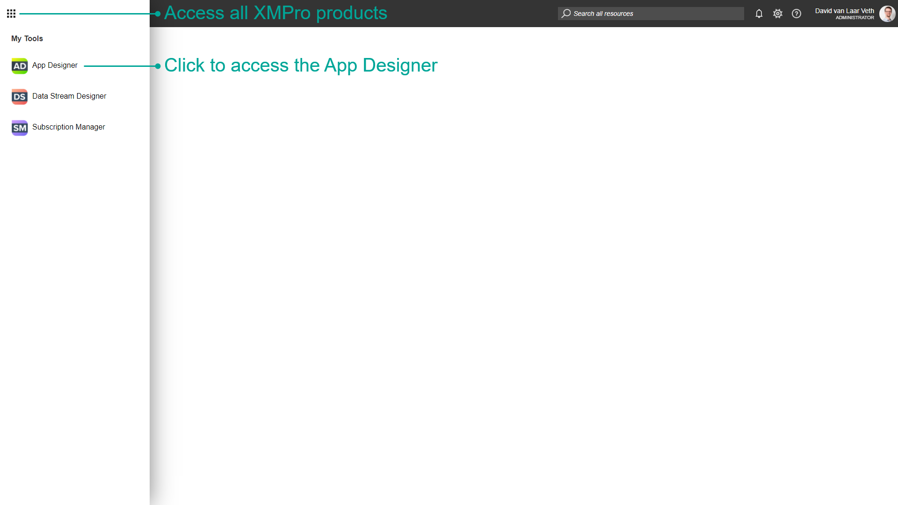
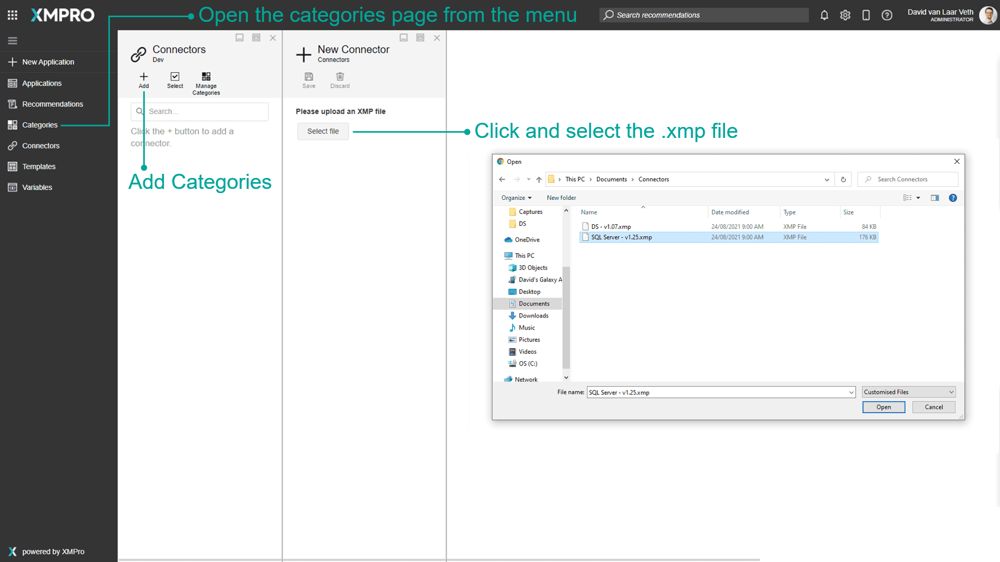

Upload Agents & Connectors
After you have installed App Designer and Data Stream Designer and set up a new Company, you will want to add Connectors and Agents to the Company. This article will show you step-by-step how to upload the default set of Connectors and Agents.
Data Stream Designer - Agents
- Log into XMPro as a Company Administrator and navigate to the Data Stream Designer

Click the Agents button in the menu on the left to open the Agents page
Click the Add button
Download the files from each of the following links:
- Click Select file and upload the Tier 5 - Agents (1 of 2).zip file found in the link above

- Click Save

- Click Discard and repeat the above steps for the other 2 files
App Designer - Connectors
- Navigate to the App Designer

Click the Connectors button in the menu on the left to open the Connectors page
Click the Add button
Download the file from the following link:
- Click Select file and upload the zip file found in the link above

- Click Save
Last modified: August 26, 2025